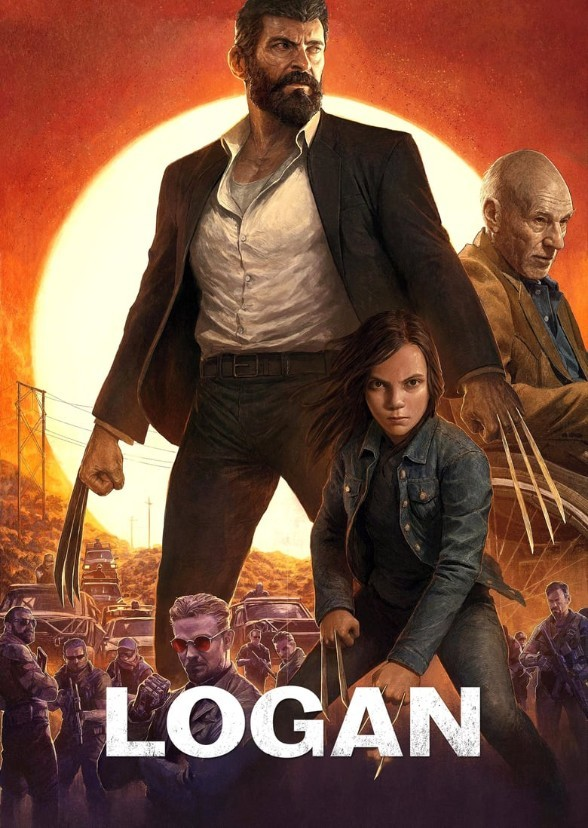

INTERSTELLAR
Interstellar is a 2014 epic science fiction film directed by Christopher Nolan, who co-wrote the screenplay with his brother Jonathan. It features an ensemble cast led by Matthew McConaughey, Anne Hathaway, Jessica Chastain, Bill Irwin, Ellen Burstyn, and Michael Caine. Set in a dystopian future where Earth is suffering from catastrophic blight and famine, the film follows a group of astronauts who travel through a wormhole near Saturn in search of a new home for mankind.
...

SHAWSHANK REDEMPTION
The Shawshank Redemption is a 1994 American prison drama film written and directed by Frank Darabont, based on the 1982 Stephen King novella Rita Hayworth and Shawshank Redemption. The film tells the story of banker Andy Dufresne (Tim Robbins), who is sentenced to life in Shawshank State Penitentiary for the murders of his wife and her lover, despite his claims of innocence.
...

LOGAN
Logan is a 2017 American superhero film based on the Marvel Comics character Wolverine. Directed by James Mangold, who co-wrote the screenplay with Michael Green and Scott Frank from a story by Mangold, it is the tenth film in the X-Men film series, the third and final installment in the Wolverine trilogy.
...